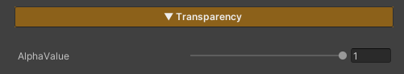

Video ZLZ Anime Shader – Surface & Stylization Overview

Note
To control transparency only in specific areas, set the Alpha Channel in the Main Texture.
Areas with lower Alpha values (darker) will appear more transparent,
while areas with higher Alpha values (brighter) will appear more opaque.